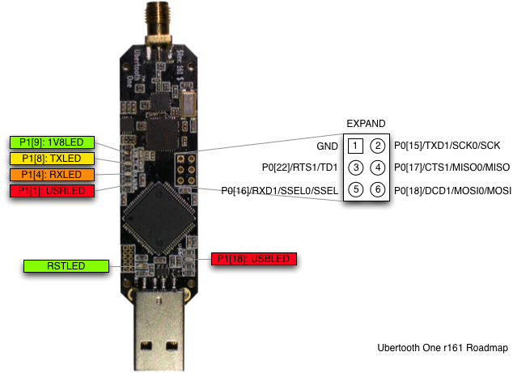

Firmware¶
How To Update Firmware¶
First, grab the latest Ubertooth release. Then, extract the archive and change into directory ubertooth-one-firmware-bin.
You may then run the ubertooth-dfu command like so:
$ ubertooth-dfu -d bluetooth_rxtx.dfu -r Switching to DFU mode... Checking firmware signature ........................................ ........................................ ................
The device will automatically enter DFU mode and flash the firmware.
If you see control message unsupported at the end, this means that resetting the device failed. You can handle this by running ubertooth-util -r or just unplugging the USB cable from the Ubertooth and reconnecting it.
Troubleshooting:
If you run into an error such as “libUSB Error: Command Error: (-1)” or the Ubertooth’s 4 LEDs next to each other perform a distinctive chasing pattern, after extracting the archive of the latest Ubertooth release, change into the firmware directory. Then, run:
make clean all && make ubertooth-dfu -r -d bluetooth_rxtx/bluetooth_rxtx.dfu
If your Ubertooth Ones has no firmware or broken firmware and doesn’t show up when issuing lsusb, you can force the Ubertooth One into DFU mode by connecting pins 1 and 3 on the EXPAND header (P4):

You should see the following appear in dmesg:
[ 1323.391369] usb 1-10: new full-speed USB device number 7 using xhci_hcd [ 1323.541063] usb 1-10: New USB device found, idVendor=1d50, idProduct=6002, bcdDevice= 1.05 [ 1323.541069] usb 1-10: New USB device strings: Mfr=1, Product=2, SerialNumber=3 [ 1323.541073] usb 1-10: Product: Ubertooth One [ 1323.541077] usb 1-10: Manufacturer: Great Scott Gadgets [ 1323.541080] usb 1-10: SerialNumber: 07b00004c81435ae82624953861e00f5 [ 1341.978766] usb 1-10: USB disconnect, device number 7
The device will only stay in dfu mode for a few seconds, so you have to quickly issue the ubertooth-dfu command to flash.
What Version Am I Running?¶
In non-DFU mode, you can obtain firmware information with ubertooth-util -v. Note that the version shown should match the one you just installed:
$ ubertooth-util -v Firmware version: 2018-12-R1 (API:1.05) $ ubertooth-util -V ubertooth 2018-12-R1 (mikeryan@steel) Tue Aug 7 15:33:06 PDT 2018
Developing Firmware¶
You’ll need a toolchain that supports ARM Cortex-M3. The Makefiles in the firmware directory are designed for GCC and a Linux-based toolchain, specifically arm-none-eabi-gcc and libnewlib-arm-none-eabi. If you are running a Debian based distribution, you can run:
apt-get install gcc-arm-none-eabi libnewlib-arm-none-eabi
Otherwise it can be downloaded from https://launchpad.net/gcc-arm-embedded, just unpack the archive and add the bin directory to your PATH.
To build the firmware, start from the directory where you cloned or unpacked the source and run the following:
cd firmware/bluetooth_rxtx/ make
This will produce a file named bluetooth_rxtx.dfu which can be written to the Ubertooth using
ubertooth-dfu -d bluetooth_rxtx.dfu -r
Although firmware source and binary images can be found in the release downloads, you will probably want fresh code from git if you are planning to modify the firmware.